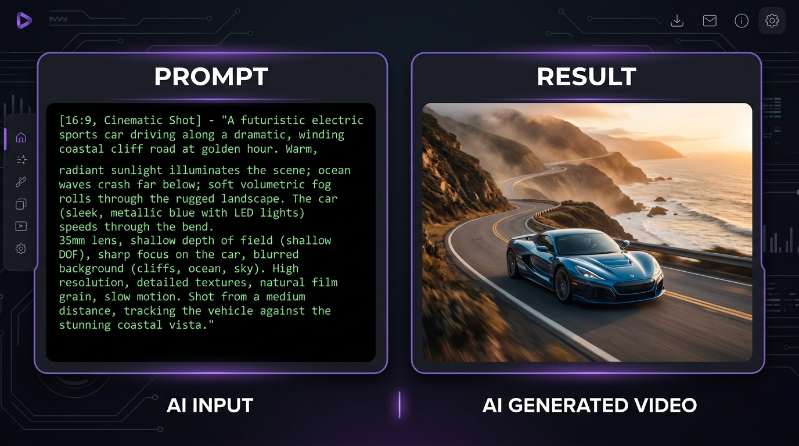
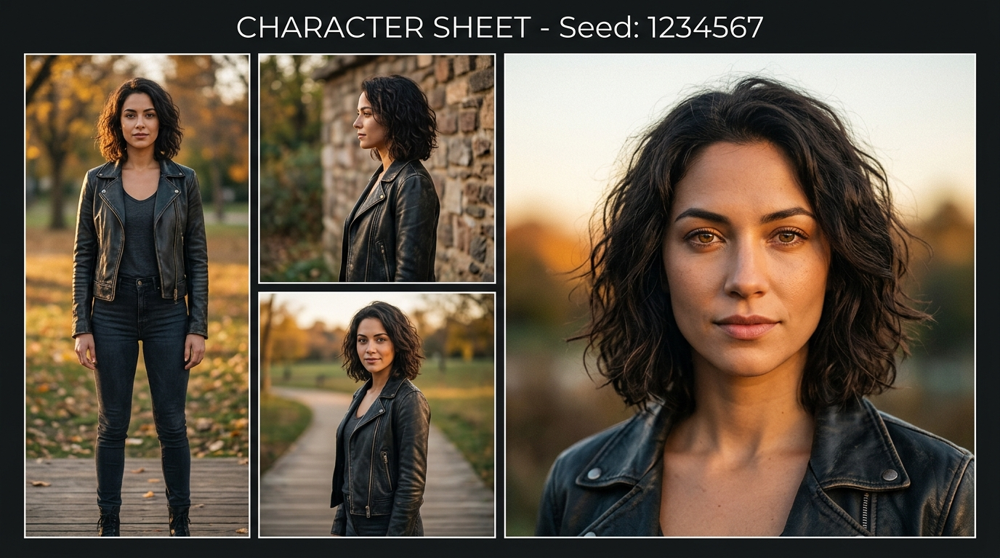
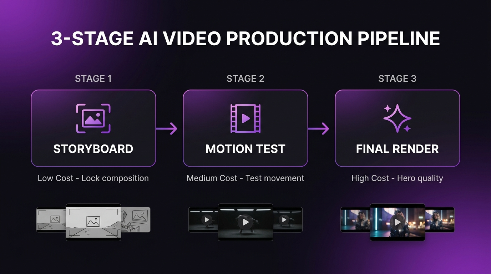

עד לפני כמה שנים, כדי להפיק סצנה הוליוודית עוצרת נשימה הייתם צריכים תקציב של מיליונים, מצלמות קולנוע ענקיות וצוות של מאות אנשים. היום? כל מה שאתם צריכים זה מחשב נייד, חיבור לאינטרנט וקצת דמיון. אבל יש פער ענק בין "לדעת שהכלים קיימים" לבין "לדעת להשתמש בהם כמו שצריך" – והפער הזה הוא בדיוק מה שמפריד בין סרטון שנראה כמו ניסוי Ai חובבני לבין סרטון שאף אחד לא מבין איך נוצר. הנה השלבים המדויקים, כולל הטריקים שבדרך כלל לא כותבים במדריכים הרשמיים.
שלב 1: החזון הוויזואלי (יצירת התמונה)
הכל מתחיל מהפריים הראשון. כדי ליצור וידאו ריאליסטי וקולנועי, אנחנו לא מתחילים ישר מוידאו – אנחנו מתחילים מתמונת סטילס (Image-to-Video), כי זה נותן לנו שליטה על כל פרט לפני שמשקיעים קרדיטים יקרים בהנפשה. זה ההבדל בין מקצוענים לחובבנים: מקצוענים לא מפילים קוביות – הם בונים כל פריים בכוונה.
הכלי: מודלים כמו Nano Banana Pro/2 יודעים לייצר דמויות עקביות וטיפוגרפיה מדויקת, ומהווים בסיס חזק וריאליסטי. ב-cR Studio שלנו, כל המודלים המתקדמים האלה זמינים בממשק אחד נגיש.
🔬 אנטומיה של פרומפט תמונה מנצח

הסבר שורה-שורה:
• שורה 1 (סגנון + עדשה + תאורה): הגדרת "Cinematic shot" מכוונת את המודל לאסתטיקה קולנועית. "35mm lens" נותן עומק שדה טבעי. "Golden hour" קובע תאורה חמה ועקבית.
• שורה 2-3 (נושא + אטמוספרה): תיאור מדויק של הסצנה עם פרטים טכניים כמו "volumetric fog" (ערפל תלת-ממדי) ו-"shallow depth of field" (רקע מטושטש).
• שורה 4 (Negative Prompt): הקו הקריטי ביותר! "Ai sheen" מסיר את הברק הפלסטיקי, "over-sharpened" מונע חידוד מוגזם שמסגיר Ai.
• שורה 5 (Seed + יחס מסך): נעילת ה-Seed מבטיחה שאם ניצור וריאציות, הדמויות ישארו עקביות.
🎭 "דף דמות" (Character Sheet) – הסוד שמפריד בין חובבנים למקצוענים

זה הטריק שמפריד בין סרטון Ai שנראה כמו ניסוי חובבני לבין תוצר שנראה כמו הפקה אמיתית. לפני שמתחילים ליצור וידאו, מייצרים 3-4 זוויות של אותה דמות (פרונטלי, פרופיל, 3/4, קלוז-אפ) מאותו Seed ואותו פרומפט בסיס. כל הזוויות האלה מוזנות כרפרנס למודל הווידאו, וזה מה שמונע מהפרצוף "לזחול" (drift) בין שוטים.
טכניקות Pre-Production שלא כותבים במדריכים:
- נעילת Seed – הבסיס לעקביות: כל מודל תמונה טוב מאפשר לנעול Seed (מספר שקובע את הגרעין האקראי). כשנועלים Seed ומשנים רק פרט אחד (תאורה, זווית, בגד), מקבלים וריאציה עקבית של אותה דמות – לא דמות חדשה לגמרי.
- Negative Prompts – הקו בין Ai ל"לא Ai": בלי לציין מפורשות מה לא רוצים (warped hands, plastic skin, waxy texture, uncanny eyes), המודלים בורחים לאסתטיקה סינתטית – מה שקוראים לו "Ai sheen" (הברק הפלסטיקי). זה הדבר הראשון שמסגיר תוכן Ai.
- סכמת תאורה אחידה: אם שוט אחד מצולם ב-"golden hour" והבא ב-"studio lighting", גם אם כל שוט בפני עצמו מדהים – הרצף ייראה שבור. מגדירים "schema" של תאורה מראש ודבקים בו.
- מסגרת ארבעת האלמנטים (The Four-Element Framework): כל פרומפט אפקטיבי חייב להגדיר במפורש: (1) נושא ולבוש, (2) סגנון תאורה ופלטת צבעים, (3) מצלמה ועדשה, (4) אילוצי עקביות (Seed, רפרנס). חוסר של אלמנט אחד = המודל "מנחש" ומייצר זבל.
שלב 2: מחרוזת קסם (הנפשת התמונה לוידאו)
אחרי שיש לכם את התמונה המושלמת, הגיע הזמן לתת לה תנועה. מקצוענים אמיתיים לא נשענים על מודל אחד – הם בוחרים את הכלי הנכון לשוט הנכון. פלטפורמות כמו Higgsfield (שמאגדות בתוכן Seedance, Kling, Veo ועוד) מאפשרות גישה למספר מודלים ממשטח אחד.
🎬 אנטומיה של פרומפט וידאו מנצח
הסבר שורה-שורה:
• "Slow dolly in" ולא "המצלמה מתקרבת": מודלי וידאו מגיבים טוב יותר למונחים קולנועיים טכניים (dolly, pan, rack focus, handheld) מאשר לתיאורים ספרותיים. הסיבה: נתוני האימון שלהם מכילים מטא-דאטה של צלמים מקצועיים.
• "Handheld micro-shake": הנשק הסודי נגד "סחף קולנועי" (Cinematic Drift) – הנטייה של המודלים "לשדרג" הכל לתנועה חלקה מדי שנראית מלאכותית.
• Negative Prompt נגד "perfectly smooth camera": כן, אנחנו אומרים למודל במפורש לא ליצור תנועת מצלמה מושלמת. זה מה שגורם לתוצאה להרגיש אותנטית.
• motion_strength: 0.7: פרמטר קריטי שרוב המתחילים לא נוגעים בו. מספר נמוך מדי = סרטון סטטי. גבוה מדי = עיוותים. 0.6-0.8 הוא ה-"sweet spot".
📊 טבלת השוואת מודלי וידאו (נכון ליולי 2026)
| מודל | חוזקה עיקרית | אורך מקסימלי | מגבלה | מתי להשתמש? |
|---|---|---|---|---|
| Kling 3.5 | פיזיקה ריאליסטית, תנועת מצלמה | ~15 שניות | עלויות גבוהות ב-Master | שוטים קולנועיים עם תנועה מורכבת |
| Veo 3.1 | ליפ-סינק, אודיו מובנה | ~8 שניות | פחות שליטה בקומפוזיציה | דמויות מדברות, talking heads |
| Seedance 2.0 | מהירות, מחיר, multi-reference | ~10 שניות | פחות ריאליסטי בתנועה מורכבת | הפקה מהירה, B-roll, סטייל |
| Higgsfield (Soul 2.0) | עקביות דמויות (Soul ID) | ~10 שניות | דורש אימון זהות (3-5 דקות) | פרויקטים רב-סצנתיים עם דמות קבועה |
טכניקות שוט שלא תמצאו בתיעוד הרשמי:
- "סחף קולנועי" (Cinematic Drift) – האויב של UGC: אם המטרה היא סרטון שנראה כמו סלפי טלפון אמיתי (למשל לטיקטוק), המודלים נוטים "לברוח" לאסתטיקה מושלמת מדי. הפתרון: מזינים בכוונה "slight handheld shake", "front camera phone quality", ואפילו Negative Prompt נגד "cinematic" ו-"professional cinematography".
- Soul ID – אימון זהות דיגיטלית: במקום להזין רפרנס תמונה בודד, Higgsfield מאפשר להעלות 20+ תמונות של אותו אדם מזוויות שונות. המערכת מאמנת "טביעת אצבע" דיגיטלית תוך 3-5 דקות שנשמרת לנצח ומונעת drift.
- טכניקת "First Frame Chaining": הפריים האחרון של קליפ הופך לפריים הראשון של הקליפ הבא. ככה יוצרים רצף חלק בין קליפים שנוצרו בנפרד.
- ליפ-סינק בעברית – הבעיה שלא מדברים עליה: רוב המודלים אומנו על אנגלית. הטריקים: משפטים קצרים, הימנעות מצלילים גרוניים חדים, שימוש ב-Kling Omni עם תמיכה פונטית רחבה. כשזה עדיין לא מושלם – עריכה ידנית עם cR Studio.
שלב 3: אסטרטגיית ייצור (Draft → Refine → Finalize)

זה הסוד הכי גדול של הפקות Ai מקצועיות, והוא פשוט: לעולם אל תנסו לקבל שוט מושלם בניסיון הראשון. מקצוענים עובדים בשלושה שלבים מובנים כדי לחסוך עד 70% מעלויות הקרדיטים:
| שלב | מה עושים? | עלות | מודל מומלץ |
|---|---|---|---|
| 1. סטוריבורד | תמונת סטילס → נועלים קומפוזיציה, תאורה ודמות | ● נמוכה | Nano Banana 2 / Midjourney |
| 2. בדיקת תנועה | קליפ קצר (3-5 שניות) ברזולוציה נמוכה לבדיקת תנועה | ● בינונית | Kling Standard / Seedance |
| 3. רינדור סופי | רק אחרי שהקומפוזיציה אושרה → רינדור מלא באיכות גבוהה | ● גבוהה | Kling Master / Veo 3.1 |
המטריקה שמקצוענים עוקבים אחריה:
- "עלות לקליפ מאושר" (Cost Per Approved Clip): תפסיקו למדוד "עלות לשנייה שנוצרה". מודל יקר שעובד בניסיון הראשון זול יותר ממודל "זול" שדורש 10 ניסיונות. זו המטריקה האמיתית.
- מלכודת "הקזינו הדיגיטלי": אם לא הצלחתם אחרי 3 ניסיונות עם אותו פרומפט – עצרו. הבעיה היא לא המזל שלכם, הבעיה היא ברפרנס התמונה או בניסוח. שנו גישה, לא רק תדירות.
- שימוש בשכבות (Model Tiers): Kling Standard ל-80% מהעבודה, Kling Master רק ל-"Hero Shots" – השוטים שבאמת חשובים. אותו הדבר: Seedance ל-B-roll, Veo לדמויות מדברות.
שלב 4: הטאץ' הסופי (עריכה, צבע וסאונד)
סרטון הוליוודי לא יכול להיות שקט, ולא יכול להיראות כמו קולאז' של מודלים שונים. עריכת הסאונד (Sound Design), תיקוני הצבע (Color Grading) והרכבה מקצועית הם מה שהופכים חומר גלם ל"סרט".
מה שבאמת קורה אחרי הרינדור:
- אחידות צבע בין מודלים (LUT Matching): לכל מודל Ai "טביעת אצבע" צבעונית שונה (קונטרסט, רוויה, טמפרטורה). ב-2026, כלים כמו Colourlab.ai או Neural Engine של DaVinci Resolve מבצעים Shot Matching אוטומטי. קודם יוצרים Baseline ניטרלי, ורק אז מוסיפים גרייד יצירתי.
- פוליי (Foley) – הדבר שהאוזן לא שומעת אבל הגוף מרגיש: רעשי צעדים, בד שמתחכך, נשימה. בלעדיהם, גם שוט ויזואלי מושלם ירגיש "ריק". כלי Ai חדשים מייצרים פוליי אוטומטית על בסיס ניתוח ויזואלי של הקליפ – צעדים ככל שהדמות הולכת, נשימה ככל שהיא מדברת.
- "רעש חדר" (Room Tone) לפני מוזיקה: לפני שמוסיפים מוזיקת רקע – מוסיפים שכבה עדינה של רעש סביבתי (אולפן, רחוב, טבע) שנותנת לצליל "מקום" אמיתי. שקט דיגיטלי מוחלט מסגיר מיד שזו עריכה.
- כתוביות דינמיות: מעל 80% מהצופים ברשתות החברתיות צופים על השתק. כלים כמו clips.Scribe מוסיפים כתוביות קופצות בסגנון הורמוזי שמושכות עין ומשאירות צופים.
שורה תחתונה
הפער בין "עוד סרטון Ai" לבין תוכן שנראה כמו הפקה אמיתית לא נמצא בבחירת המודל הכי חדש – הוא נמצא בפרטים הטכניים הקטנים: נעילת Seed, בניית Character Sheet, בחירת מינוח מצלמה טכני, עבודה ב-3 שלבים (Draft → Refine → Finalize), ועיצוב פס-קול מקצועי. אלה בדיוק הדברים שלוקח חודשים ללמוד בניסוי וטעייה – ואלה בדיוק הדברים שאנחנו כבר יודעים.
שאלות ותשובות נפוצות
כמה עולה להפיק סרט Ai מהבית?
מנויי הכלים נעים בין $20-$100 לחודש. אבל המטריקה החשובה היא "עלות לקליפ מאושר" – מודל יקר שעובד בניסיון הראשון זול יותר ממודל "זול" שדורש 10 ניסיונות. הפקה מקצועית של סרטון שלם יכולה לעלות בין $100-$500 בקרדיטים.
האם אפשר להשתמש בסרטוני Ai באופן מסחרי?
כן. רוב הפלטפורמות המובילות נותנות רישיון מסחרי מלא במנוי Pro/Creator. חשוב לקרוא את תנאי השימוש של כל פלטפורמה – חלקן דורשות מנוי ספציפי לשימוש מסחרי.
מה ההבדל בין Higgsfield, Kling ו-Veo?
Higgsfield מצטיין בעקביות דמויות (Soul ID) ובממשק מובייל. Kling שולט בתנועת מצלמה ופיזיקה ריאליסטית עד 15 שניות. Veo מוביל בליפ-סינק ובאודיו מובנה. מקצוענים משלבים בין הכלים – כל אחד לסוג השוט שלו.
מה זה Image-to-Video ולמה זה עדיף?
במקום לכתוב טקסט ולקוות שהמודל "ינחש" את מה שרציתם (Text-to-Video), יוצרים קודם תמונה מושלמת ורק אז מנפישים אותה. זה נותן שליטה מלאה על הקומפוזיציה לפני שמשקיעים קרדיטים יקרים.
איך שומרים על עקביות דמות בין כמה סצנות?
שלוש שיטות: (1) בניית Character Sheet עם 3-4 זוויות מאותו Seed, (2) שימוש ב-Soul ID של Higgsfield שמאמן זהות קבועה מ-20+ תמונות, (3) טכניקת First Frame Chaining – הפריים האחרון של קליפ הופך לראשון של הבא.
רוצים שהמומחים שלנו יעשו את זה עבורכם?
ב-clips.Revolution אנחנו מפיקים סרטוני תדמית וסרטוני Ai ברמה הבינלאומית הגבוהה ביותר – עם כל הטכניקות שקראתם עליהן פה, ועוד כמה שלא סיפרנו.
צרו קשר עכשיו להפקת וידאו פרימיום